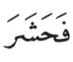

Pengenalan
✅ Juga dikenali sebagai waqaf nabawi.
✅ Waqaf ➺ berhenti bacaan, ambil nafas.
✅ Ini ialah waqaf yang dilakukan oleh malaikat Jibril sewaktu tadarus dengan Nabi Muhammad SAW, kemudian Nabi pun turut ikut waqaf di situ.
✅ Oleh itu sunnah untuk kita waqaf pada ayat-ayat di bawah ini.
✅ Ada 10 tempat yang disepakati ulama'.
| Ayat | Waqaf di | 🎧 | |
|---|---|---|---|
| ❶ |
🌠 m/s 23 🌠 Al-Baqarah, 2:148 |
|
|
| ❷ |
🌠 m/s 116 🌠 Al-Ma'idah, 5:48 |
|
|
| ❸ |
🌠 m/s 62 🌠 Ali 'Imran, 3:95 |
|
|
| ❹ |
🌠 m/s 127 🌠 Al-Ma'idah, 5:116 |
|
|
| ❺ |
🌠 m/s 248 🌠 Yusuf, 12:108 |
|
|
| ❻ |
🌠 m/s 251 🌠 Ar-Ra'd, 13:17 |
|
|
| ❼ |
🌠 m/s 267 🌠 An-Nahl, 16:5 |
|
|
| ❽ |
🌠 m/s 416 🌠 As-Sajdah, 32:18 |
|
|
| ❾ |
🌠 m/s 584 🌠 An-Nazi'at, 79:23 |
 |
|
| ❿ |
🌠 m/s 598 🌠 Al-Qadr, 97:3 |
|